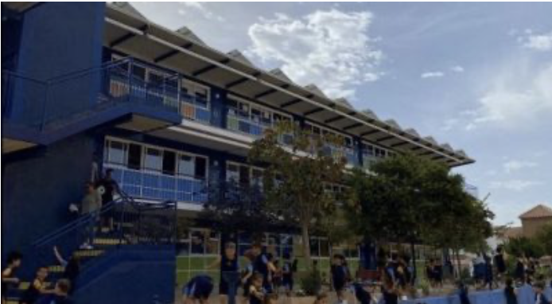
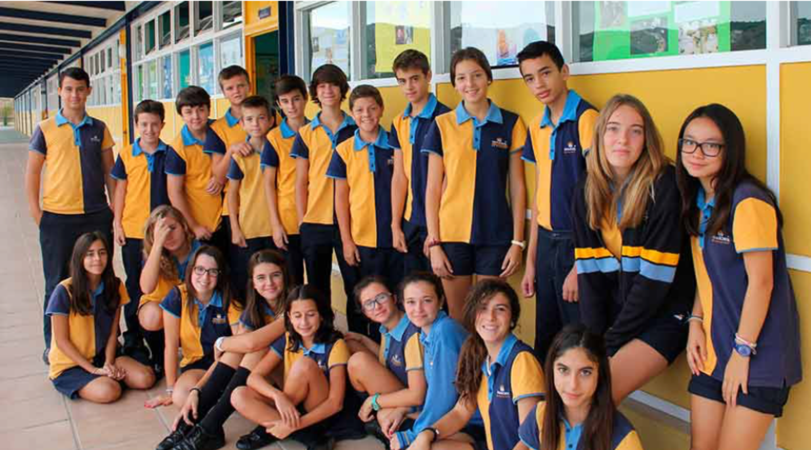
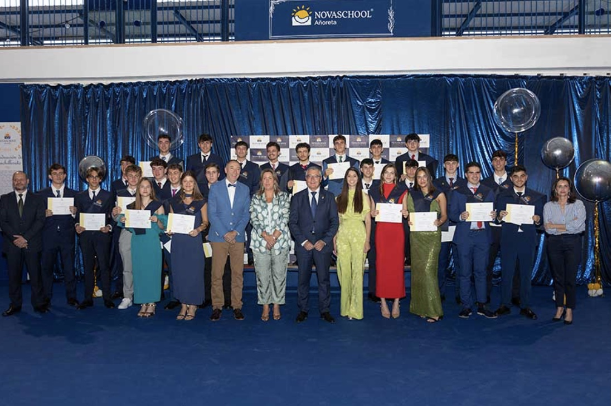

Instalaciones
Espacios pensados para acompañar el aprendizaje diario y la convivencia escolar.
Historia, identidad y propuesta educativa del centro con una presentación más limpia y mejor integrada.
Esta parte institucional reúne identidad, visión educativa y propuesta del centro con una presentación más sólida y limpia.

Espacios pensados para acompañar el aprendizaje diario y la convivencia escolar.

Pabellón cubierto y actividades físicas como parte del desarrollo integral.

La imagen del colegio también se construye desde su comunidad.

Actos y experiencias que refuerzan la identidad del centro.